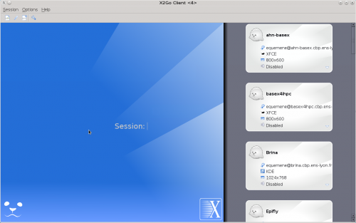
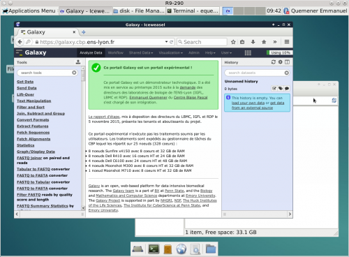
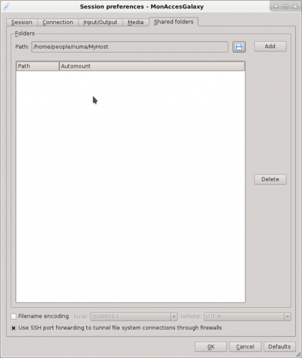
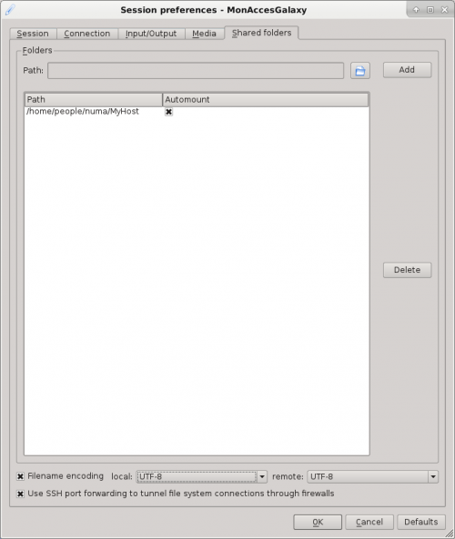
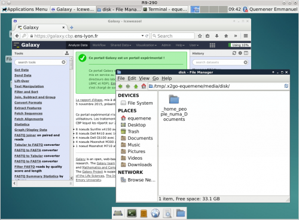
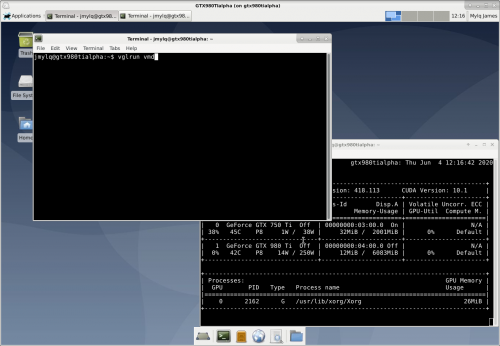
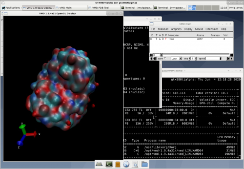
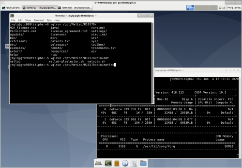
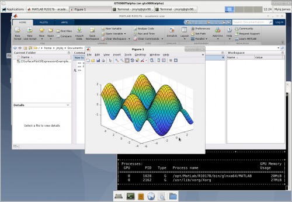

Utilisation de x2go au Centre Blaise Pascal¶
Ce qu’il faut retenir pour utiliser x2go !¶
Activer son accès SSH auprès de la DSI de l’établissement
Installer le client x2go sur son ordinateur
Configurer l’accès à une des machines de la salle de formation
Choisir judicieusement sa machine dans la liste
Introduction¶
Le Centre Blaise Pascal dispose de plateaux techniques, notamment des noeuds de clusters, destinés :
à l’initiation au calcul scientifique, notamment MPI, OpenMP, CUDA OpenCL
au développement d’applications dans le domaine du calcul scientifique
à l’intégration de démonstrateurs agrégeant des technologies matures dans un ensemble original
au passage de l’expérience scientifique (« la paillasse ») à la technologie de production (« le génie des procédés »)
à l’exploration de « domaine de vol » des applications scientifiques (paramètres de parallélisation, audit de code)
à la réalisation de prototypes pour la mise en place de nouveaux services informatiques
Pour accéder aux ressources du CBP de l’extérieur de l’établissement
Ouverture de son accès SSH¶
Se connecter sur L’Espace Numérique de Travail de l’ENS-Lyon
Cliquer sur Accès SSH pour Activer votre accès à la passerelle SSH
Cliquer sur le bouton Je demande l’activation de mon accès SSH
Une notification d’activation ou un message comme le suivant apparait
Choix d’un poste de travail distant¶
Les 28 postes de la salle de formation sont accessibles par x2go.
A ces machines s’ajoutent 40 autres machines : consultez donc la liste.
Pour résumer, les machines qui ne sont pas dans la salle disposent :
d’une mémoire de 16 GB à 2 TB de RAM ou équivalent
de 8 coeurs à 128 coeurs physiques
de 8 threads à 256 threads logiques
de 500 GB à 12 TB d’espace local
Installation du client x2go¶
La X2GoClient offre tout le nécessaire pour l’installation
Voici quelques liens pour les platesformes les plus courantes :
pour Debian x2goclient fait partie de l’archive standard depuis Jessie
Pour toutes les versions Windows depuis XP
Attention ! Un redémarrage COMPLET de Windows semble nécessaire.
Pour MacOSX version 10.9, version 10.11 et version 10.13.
l’installation de la dernière version de XQuartz est indispensable
Attention ! Un redémarrage COMPLET de MacOSX semble nécessaire pour XQuartz
Paramétrage du client x2go¶
Le nom de machine, illustré par mastation doit être remplacé impérativement par le nom de la machine. La liste des machines de la salle de formation est disponible sur machines2xgo
Lors de la création d’une nouvelle session cliente x2go, les éléments suivants doivent être définis :
Session Name ou Nom de la session : nom de la session, plutôt de la forme MaStation au CBP
Host ou Hôte : le nom de la machine destination,
nécessairement de la forme « mastation.cbp.ens-lyon.fr »
Login ou identifiant : l’identifiant ENS-Lyon de l’utilisateur
Utilisation du proxy ENS-Lyon :
Pour activer le proxy, cliquer
soit sur Use Proxy server for SSH connection
soit sur Utiliser un serveur mandataire pour la connexion SSH
Type : SSH
Host ou Hôte : « ssh.ens-lyon.fr »
Pour définir l’identifiant et le mot de passe sur le serveur Proxy, cliquer :
soit Même identifiant que sur le serveur X2Go et Même mot de passe que sur le serveur X2Go
soit Same login as on X2Go Server et Same password on X2Go Server
Session type ou Type de session, sélectionner « XFCE »
Sur le deuxième onglet, Connection ou Connexion
Pour Connection speed ou Vitesse de connexion, sélectionner LAN
Sur le troisième onglet, Input/Output ou Entrées/Sorties
Pour Display, sélectionner Custom ou Personnalisé
avec Width mis à « 1024 » et Height mis à « 768 »
Sur le quatrième onglet, Media
Désactiver Enable sound support ou Activer le son
Désactiver Client side printing support ou Gestion de l’impression côté client
Lancement d’une session x2go¶
 Usages particuliers¶
Export d’un dossier local¶
  Lancement d’une application OpenGL¶
Certaines applications graphiques (comme matlab ou vmd) peuvent exiger un affichage graphique accéléré.
VirtualGL permet d’exploiter le circuit graphique embarqué sur la machine distante pour accélérer le rendu.
Pour lancer son application graphique en utilisant cet outil VirtualGL, il suffit de préfixer dans un terminal la commande de lancement de l’application avec « vglrun ».
Exemple pour le logiciel VMD
Par exemple, pour lancer l’application de visualisation VMD, dans un terminal : « vglrun vmd »
Le résultat apparaît. En bas à droite, vous pouvez voir que cette application VMD exploite le GPU pour les calculs (les « C » pour la colonne « Type ») mais aussi pour l’affichage (le « C+G »).
Exemple pour le pachyderme Matlab
Par exemple, pour lancer l’application de visualisation VMD, dans un terminal : « vglrun /opt/MatLab/R1017B/bin/matlab »
Le résultat apparaît. En bas à droite, vous pouvez voir que Matlab exploite le GPU pour (le « G »).
